Parameterized systems
Many systems are designed to include an arbitrary number of similar or identical components. A good example of such a system is the Internet, which is designed to accommodate a large number of hosts, all communicating using the same set of protocols. Another example would be peer-to-peer protocols such as Chord.
We call these parameterized systems where the parameter in question
is the number of protocol participants. Ivy allows you to model an
implement parameterized protocol in a particular style. A
parameterized object is one in which every component has an initial
parameter of the same type. Here is an example of an object parameterized on type t:
type t
object foo = {
function bit(S:t) : bool
after init {
bit(S) := false
}
action set_bit(self:t) = {
bit(self) := true
}
}
Notice that both the state component bit and the action set_bit
have a first parameter of type t. The parameter of set_bit is
suggestively called self. This parameter is used in any references
to state components within the action. Thus, object foo really acts
like a collection of independent objects or processes, one for each
element of type t. The type t acts like a reference to one of
these objects.
Ivy provides a shorthand for parameterized objects. We can equivalently
write the object foo as follows:
type t
object foo(self:t) = {
individual bit : bool
after init {
bit := false
}
action set_bit = {
bit := true
}
}
Ivy adds the parameter self to each state component of foo, and
each reference to a component. That is, self becomes an implicit
parameter, much as it does in an object-oriented programming language
(except for Python, where the self parameter is explicit). It makes
no difference to Ivy whether you use implicit or explicit
parameters. You can reason about Ivy programs in the same way using
either style.
As we will see later, IVY has special support for parameterized objects. For example, you can compile them and run them in separate process spaces or on different hosts. In addition, when proving assertions that relate to only one process, you can ignore the parameter. This can be a good trick for staying within a decidable logical fragment.
Leader election ring
As an example of a parameterized protocol, lets look at the very simple leader election protocol, introduced in this paper in 1979.
In this protocol we have a collection of distributed processes
organized in a ring. Each process can send messages to its right
neighbor in the ring and receive message from left neighbor. A process
has a unique id drawn from some totally ordered set (say, the
integers). The purpose of the protocol is to discover which process
has the highest id value. This process is elected as the “leader”.
This protocol itself is trivially simple. Each process transmits its
own id value. When it receives a value, it retransmits the value,
but only if it is greater than the process’ own id value. If a
process receives its own id, this value must have traveled all the
way around the ring, so the process knows its id is greater than all
others and it declares itself leader.
We’ll start with a service specification for this protocol, using the explicit parameterized style:
isolate app = {
action tick(me:node) # called when a timer expires
action elect(me:node) # called when v is elected leader
specification {
before elect {
ensure me.pid >= node.pid(X) # only the max pid can be elected
}
}
} with node, id, trans
The isolate app is parameterized on an abstract datatype node
that we will define shortly. Type node represents a reference to a
process in our system. The function pid gives the id of a node, and
will be defined shortly. The with clause at the end of the isolate
tells us that this isolate depends on isolates node, id and trans
that we will define later.
The interface of app has two actions: tick is called by the
environment at some frequency, while elect is called by a node when
it is elected leader. The specification of elect says that only the
node with the maximum id value can be elected.
Now that we know what the protocol is supposed to do, let’s implement it:
isolate app = {
...
implementation {
implement tick(me:node) {
call trans.send(me,me.get_next,me.pid);
}
implement trans.recv(me:node,v:id) {
if v = me.pid { # Found a leader
call elect(me);
}
else if v > me.pid { # pass message to next node
call trans.send(me,me.get_next,v);
}
}
}
} with node, id, trans
We implement the tick by calling the network transport trans to
send our id to the next node in the ring.
The protocol also implements the recv action of the transport interface.
This is called when the process receives a message with
an id value v. If the value is equal to the process’ own id, the
process knows it is leader and calls elect. Otherwise, if the
received value is greater, it calls trans.send to send the value on
to the next node.
Here is the same isolate described in the implicit style:
isolate app(me:node) = {
action tick # called when a timer expires
action elect # called when v is elected leader
specification {
before elect {
ensure me.pid >= node.pid(X) # only the max pid can be elected
}
}
implementation {
implement tick {
call trans.send(me,me.get_next,me.pid);
}
implement trans.recv(v:id) {
if v = me.pid { # Found a leader
call elect;
}
else if v > me.pid { # pass message to next node
call trans.send(me,me.get_next,v);
}
}
}
}
There is not much difference. Notice that we dropped the parameter
me from the action definitions. However, references to other objects
still have to have the explicit parameter me. The implicit style
mainly shows an advantage when the parameterized object has many references
to its own actions and state components.
With our protocol implemented, let’s look at the interfaces that it’s
built on, starting with the type of id values:
module total_order_properties(t) = {
property [transitivity] X:t < Y & Y < Z -> X < Z
property [antisymmetry] ~(X:t < Y & Y < X)
property [totality] X:t < Y | X = Y | Y < X
}
isolate id = {
type this
specification {
instantiate total_order_properties(this)
}
}
We defined a module that captures the properties of a total order,
since we will re-use these for two different types. In fact, this
module can also be found in the standard library order. We then
define our abstract type id to be a type that satisfies these
properties. Later, we will implement type id with fixed-width
integers.
Now let’s look at the type of nodes, which is a bit more interesting:
isolate node = {
type this
action get_next(x:this) returns (y:this)
function pid(X:node) : id # map each node to an id
axiom [injectivity] pid(X) = pid(Y) -> X = Y
specification {
instantiate total_order_properties(this)
after get_next {
ensure (x < y & ~ (x < Z & Z < y)) | (y <= X & X <= x)
}
}
}
The type node supplies an action get_next that takes an element x and
returns the next element y in the ring. The specification says that
either y is the least element larger than x or x is the maximum
element and y the minimum (that is, we “wrap around” to the
beginning). In principle, we should also say that the type node is finite,
but we won’t actually need this fact to prove safety of our protocol.
This is one way of specifying a ring topology. Later we will
see a different way that can make the proofs a little simpler. We can
implement either version with fixed-width integers. We omit the implementation
here.
Notice the axiom injectivity. This says that no two processes have
the same id, which is necessary for correctness of the protocol. It
is an axiom rather than a property because it is an assumption about
the envionment. That is, we assume that the processes are configured
such that each has a unique id but we cannot prove this.
Finally, we need a specification for the network transport layer. It’s quite simple:
isolate trans = {
action send(src:node, dst:node, v:id)
action recv(dst:node, v:id)
specification {
relation sent(V:id, N:node) # The identity V is sent at node N
after init {
sent(V, N) := false;
}
before send {
sent(v,dst) := true
}
before recv {
require sent(v,dst)
}
}
The relation sent tells us which values have been sent to which
nodes. Initially, nothing has been sent. The interface provides two
actions send and recv which are called, respectively, when a value
is sent or received. The src and dst parameters give the source
and destination node of the message.
The specification says that a value is marked as sent when send
occurs and a value must be marked sent before it can be received.
This describes a network service that can duplicate or re-order
messages, but cannot corrupt messages.
Notice that trans has been written as paramterized isolate. In
particular, the first parameter of each action is the location where
the action occurs (the source for send and the destination for
recv). This is imporant for extracting parallel processes from the
Ivy code. In the netorking tutorial
we will see how the transport service can be implemented.
Verifying the leader election protocol
Now let’s try to verify that the implementation of our leader election
protocol app satisfies its service specification, assuming the
specifications of trans, node, id.
We are trying to prove that, when any node calls app.elect, it in
fact has the highest id. That is, the ensure statement is a
guarantee of app when it calls app.elect.
Obviously, we will need an inductive invariant at this point. We will
try to discover one using Ivy’s CTI
method. You can find this example
in the Ivy source directory doc/examples. We start Ivy using this command:
$ ivy_check isolate=app diagnose=true leader_election_ring.ivy
Ivy finds a counterexample to the ensure statement, and starts the
graphical interface (because we used diagnose=true).
This is what we see:
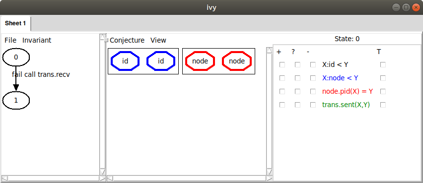
On the left, we see a failing transition starting in state 0. The
transition to state 1 is a failing call to trans.recv. To see the
execution in more detail, we can
left-click on the transition and choose Step in. In this case,
however, we already have a pretty good idea of what went wrong: some
node must have received its own id and declared itself leader
without having the highest id. This is not surprising, since with no
invariant conjectures, the only thing we know about state 0 is that
it satisfies our axioms.
On the right, we see a depiction of the state 0. There are two
elements in each of the two sorts id.t and node.t. Since we
haven’t yet selected any relations to view, this is all we see. We
could start selecting relations to see more information, but let’s
instead choose the command Invariant|Diagram to see what information
Ivy thinks might be relevant to the failure. Here’s what we see:
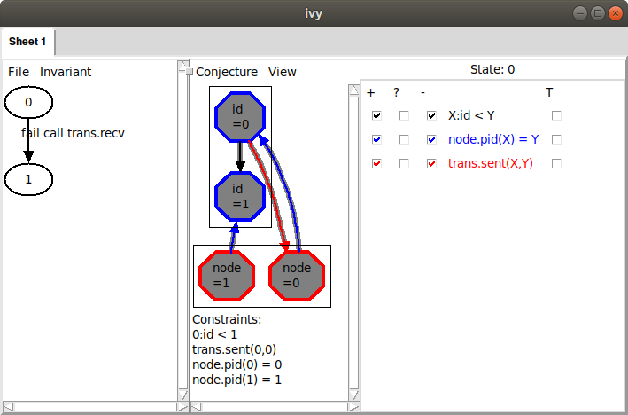
The arrow from id 0 to id 1 is depicting the relation X:id.t < Y.
Because the arrow goes from X to Y, we interpret the arrow to mean
0:id.t < 1. Similarly, the arrow from node 0 to id 0 means that
asgn.pid(0) = 0. That is, the id of node 0 is 0. We can also see
that node 1’s id is 1 and that trans.sent(0,1), in other words, id 0
has been sent to node 0. These facts are displayed below the graph
under the heading “Constraints”.
The problem is clear: node 1 is receiving its own id, so it is about
to become leader, but it does not have highest id. This situation
clearly has to be ruled out. We do this by selecting the
Conjecture|Strengthen command. Here is what Ivy says:
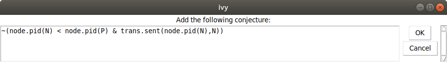
In other words, we conjecture that it never happens that a node N has
id less than a node P, and node N is receiving its own id. Now we choose
Invariant|Check induction, to see if our conjecture is inductive.
Of course, it isn’t. Here’s what Ivy says:
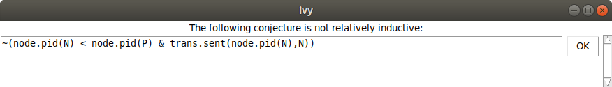
And here is the counterexample to induction:
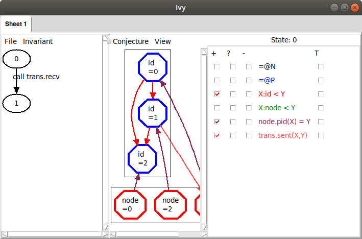
Here, some externally called action transitions from state 0
satisfying our conjecture to state 1 not satisfying the
conjecture. Ivy is depicting state 0, with all the relations that
appear in the conjecture. It’s not immediately clear what’s wrong here,
so let’s try Invariant|Diagram again to see what Ivy thinks:
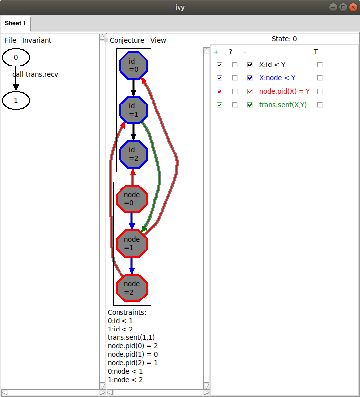
Now we can see the problem: node 2’s id is arriving at node 1, but it
should never have passed node 0, because node 0 has a higher
id. Notice, though, that there are two additional arrows in the diagram
we didn’t mention (the ones from node 1 to id 0 and id 0 to id 1). Maybe
these are actually irrelevant. We could remove these manually by
clicking on the corresponding facts below. However, we have another
trick up our sleeve. We can use bounded checking to see if some arrows
can be removed. We choose Conjecture|Minimize and (somewhat
arbitrarily) select a bound of 4 steps. Here is what Ivy says:
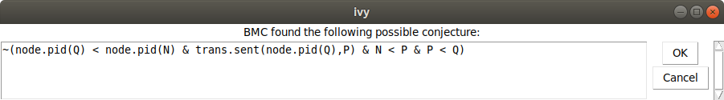
This conjecture says that we never have nodes in the order N < P < Q
such that Q has a smaller id than N and the id of Q is arriving
at P. In the graph, we see that the highlights have been removed
from the two irrelevant arrows:
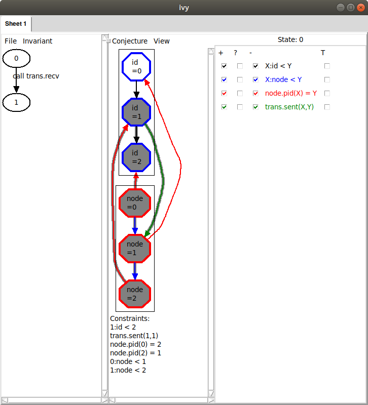
Ivy discovered that, within 4 steps, we
can rule out the highlighted facts. By ruling out a more general
situation, we obtain a stronger conjecture. Since this new conjecture
seems right, let’s add it to our set by selecting
Conjecture|Strengthen.
Now let’s try Invariant|Check induction again. Ivy is still unhappy
and says that our first conjecture is still not relatively inductive. We
try Invariant|Diagram again and here is what we see:
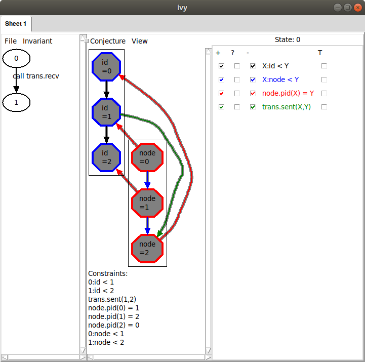
This looks very similar to the diagram that led to our previous conjecture. Here, however, it’s the id of node 0 that is arriving at node 2, when it couldn’t have passed through node 1. This situation is symmetric to the previous one by rotating the ring. Unfortunately, the way we described the ring topology using a linear order has broken the ring’s rotational symmetry, so this appears as a distinct case. Later, we’ll see a way to avoid this symmetry breaking. For now, though, we’ll just slog through the cases. As before, we minimize this diagram by bounded checking. Here is the result:
Ivy conjectures that we do not have nodes N < P < Q such that N
has a lower id than P and the id of N is arriving at Q. This is
just another case of the general proposition that a lower id cannot
pass a higher id. We chose Conjecture|Strengthen to add this new
conjecture to our set.
Now we try Invariant|Check induction (the reader may be able to
guess what happens next). Again, Ivy says that our first conjecture is
not relatively inductive. After Invariant|Diagram, we see this:
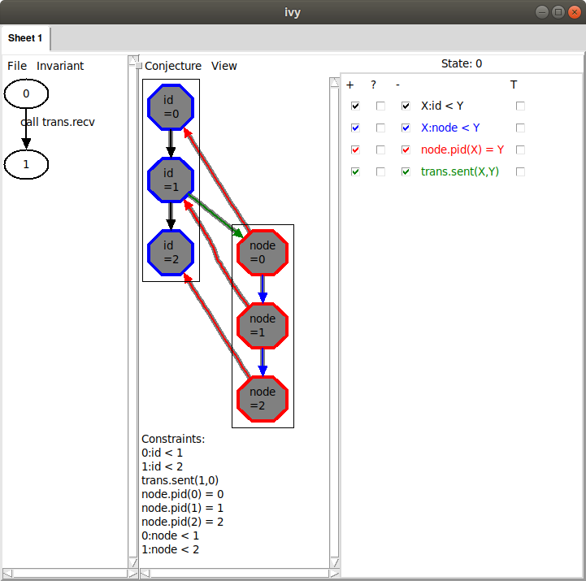
This describes the same situation, where the id of node 1 is arriving at node 0.
Once again, we generalize using Conjecture|Minimize, giving this conjecture:
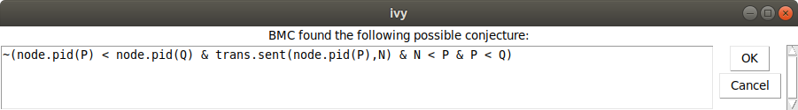
We add this conjecture using Conjecture|Strengthen. Now when we
use Invariant|Check induction, we get the following:
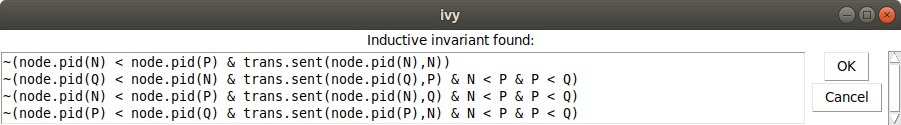
That is, we have found a proof for the isolate. We can save this invariant to
a file using the File|Save invariant command. We edit these conjectures
into our implementation object app, like this:
isolate app = {
...
private {
invariant ~(node.pid(N) < node.pid(P) & trans.sent(node.pid(N),N))
invariant ~(node.pid(Q) < node.pid(N) & trans.sent(node.pid(Q),P) & N < P & P < Q)
invariant ~(node.pid(N) < node.pid(P) & trans.sent(node.pid(N),Q) & N < P & P < Q)
invariant ~(node.pid(P) < node.pid(Q) & trans.sent(node.pid(P),N) & N < P & P < Q)
}
}
How not to break the rotational symmetry
As we observed above, this proof is a bit messy because of the way we
described the ring topology using a totally ordered set. There’s a
different way to describe rings that avoids this problem. Here is an
alternative specification of node:
isolate node = {
...
specification {
relation btw(X:this,Y:this,Z:this)
property btw(W, Y, Z) & btw(W, X, Y) -> btw(X, Y, Z)
property btw(W, X, Z) & btw(X, Y, Z) -> btw(W, X, Y)
property btw(W, X, Z) & btw(X, Y, Z) -> btw(W, Y, Z)
property btw(W, Y, Z) & btw(W, X, Y) -> btw(W, X, Z)
property W = X | btw(W, X, W)
property ~btw(X, X, Y)
property ~btw(X, Y, Y)
property btw(X,Y,Z) | Y = Z | btw(X,Z,Y)
property btw(X,Y,Z) | Y = X | btw(Y,X,Z)
after get_next {
assert ~btw(x,Z,y)
}
}
}
Instead of putting the nodes in a total order, we define are relation
btw(X,Y,Z) that holds when Y occurs on the path form X to Z in
the ring. The axioms of btw are a bit more complex than the axioms
of a total order. One the other hand, it is very easy to specify
get_next in terms of btw. We say that y is next after x in the
ring if there is no Z between x and y. You might wonder if the
properties given above for btw are really correct. Later, when we
implement node, we’ll prove that it has these properties.
Now, let’s try to verify the isolate app with this new version of node:
$ ivy_check isolate=app diagnose=true leader_election_ring_btw.ivy
This is what we see:
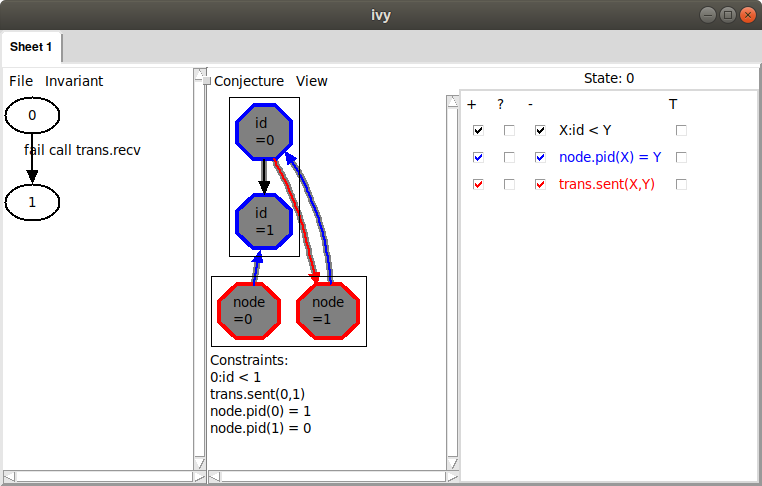
That is, we have a node 1 that is receiving its own id while node
0 has a greater id. Notice, though, that on the right the relation
node.btw doesn’t appear. This is because it is a ternary relation
and Ivy doesn’t know how to display it graphically in a reasonable
way.
Now, as before, let’s add this as a conjecture using
Conjecture|Strengthen. As before, Invariant|Check induction shows
that this conjecture is not relatively inductive. Applying Invariant|Diagram,
this is what we see:
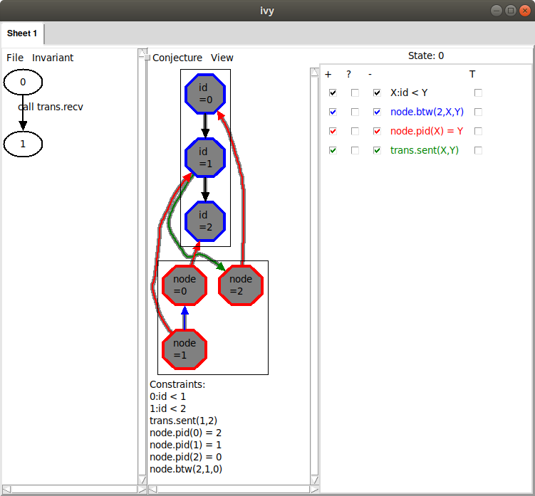
This is similar to what we saw before, but notice the blue arrow from
node 1 to node 0. This corresponds to a new relation that has
been added on the right: node.btw(2,X,Y). From this arrow, we can
infer that node.btw(2,1,0) holds. That is, starting at 2, and
moving around the ring, we see 1 before 0. We can also see this
fact stated below under “Constraints”. This means that, from 1, we
must pass through 0 on the way to 2. Therefore, the id of 1
cannot possibly reach 2, as the diagram shows.
We can try generalizing this diagram using Conjecture|Minimize, but
in this case, there is no effect. No matter – since this looks like a
reasonable conjecture, we use Conjecture|Strengthen to add it to our
invariant. Here is the result:
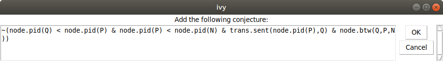
This says it is not possible to have nodes Q,P,N in ascending order of id,
such that P is on the way from Q to N and the id of P is arriving at Q.
Now let’s try Invariant|Check induction:
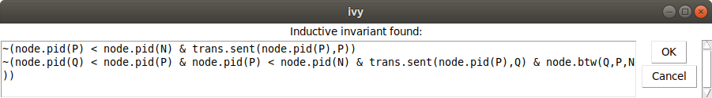
Because we haven’t broken the rotational symmetry of the ring, there
is just one case needed when we state the key invariant that an id
can’t bypass a higher id in the ring. This illustrates that the
complexity of the proof can be affected by how we write the
specification. Once again, we can save this invariant and edit it into
the definition of app.
Finally, try this command to verify that in fact the properties of
btw are correct for a particular implementation of node:
$ ivy_check leader_election_ring_btw.ivy
Have a look at the implementation of the node isolate in file
leader_election_ring_btw.ivy. If this doesn’t make sense, see the
tutorial on
abstract datatypes.